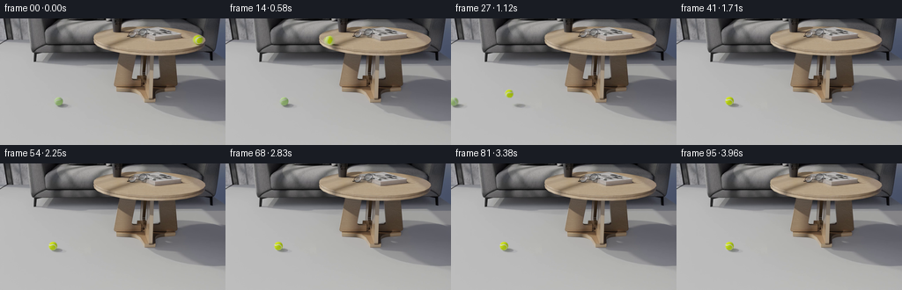
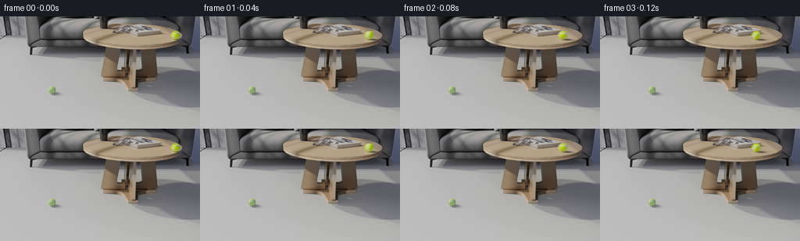
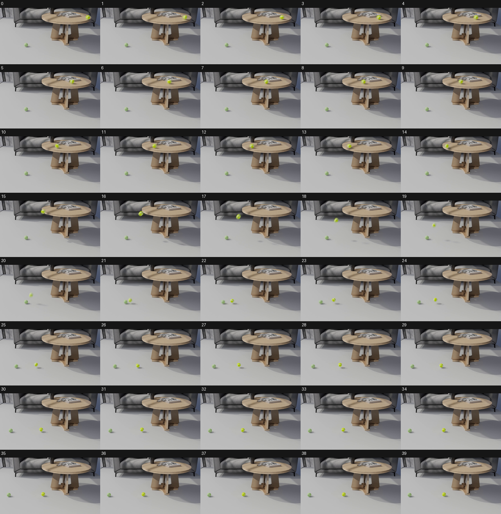
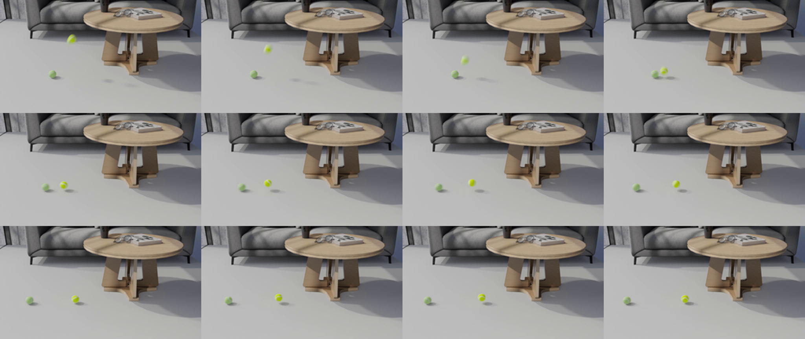
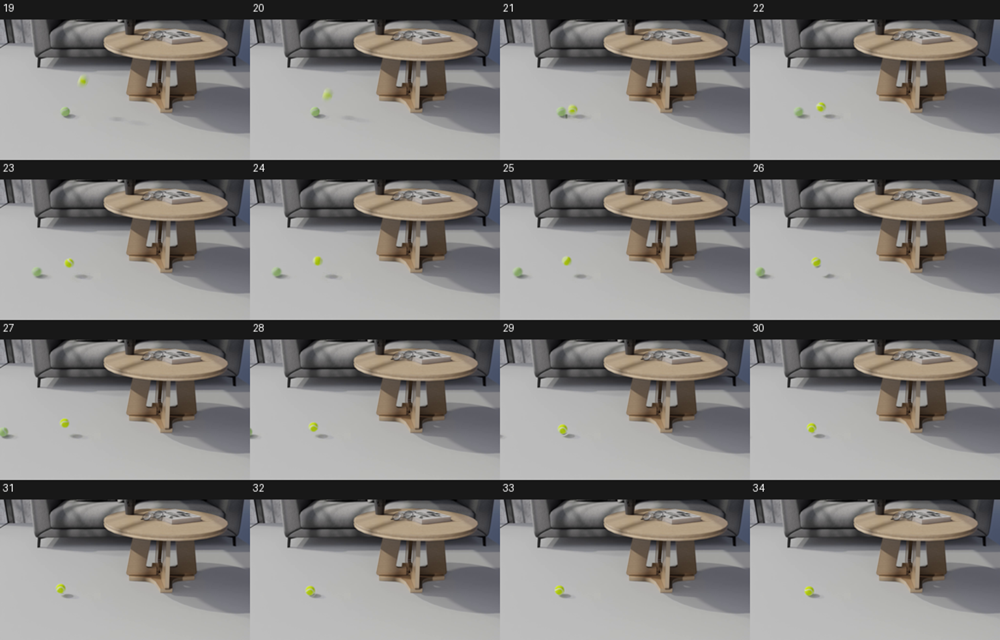

CODING AGENTS AS PIXEL WORLD MODELS
traex/GPT-6.1-Sol · pcve_0099
点击播放 · 原生 RGB 像素
编辑前的完整原视频
上方为编辑结果；原视频是模型获准使用的输入。下方为逐轮保存的编辑候选。
逐轮保存的候选
回放视频、检查图与代码变化。
每份候选均可单独播放。实际图片检查记录在下方工具轨迹中。
候选 01播放与检查图
点击播放 · 原生 RGB 像素


展开代码变化
--- 上一保存版本 +++ 本次保存版本 @@ -0,0 +1,142 @@ +"""Source-preserving counterfactual: a fivefold tennis-ball mass. + +All scenery, materials, sphere pixels and illumination come from the provided +RGB sequence. A source-calibrated two-body contact calculation supplies only +trajectory displacements; gravity and the initial velocity are unchanged. +""" +from pathlib import Path +import numpy as np +from scipy.ndimage import label, shift, gaussian_filter +from PIL import Image +import artifact_io + +ROOT = Path(__file__).resolve().parent + + +def motion(mass, count=96): + # Calibrated in projected pixels/frame against the factual floor contact. + e, old_mass, radius, gravity, bounce, damping, friction, old_damping, old_friction, falling = ( + .56173166, 1.395681, 5.75821973, 1.61781822, .42319067, + .08269999, .20827653, .09604777, .2045544, 15.21813637) + p = np.array([[78.53, 78.15], [66.35, 94.5]], dtype=float) + v = np.array([[-6.1, falling], [0., 0.]]) + inverse = np.array([1. / mass, 1. / old_mass]) + radii = np.array([radius, 4.5]) + positions = [p.copy()] + steps = 50 + dt = 1. / steps + for frame in range(20, count - 1): + for _ in range(steps): + v[:, 1] += gravity * dt + for j in range(2): + d = damping if j == 0 else old_damping + f = friction if j == 0 else old_friction + v[j, 0] *= np.exp(-d * dt) + if p[j, 1] >= 99. - radii[j] - .15: + v[j, 0] = np.sign(v[j, 0]) * max(0., abs(v[j, 0]) - f * dt) + p += v * dt + difference = p[0] - p[1] + distance = np.linalg.norm(difference) + if distance < radii.sum(): + normal = difference / distance + relative = np.dot(v[0] - v[1], normal) + overlap = radii.sum() - distance + p[0] += normal * overlap * inverse[0] / inverse.sum() + p[1] -= normal * overlap * inverse[1] / inverse.sum() + if relative < 0.: + impulse = -(1. + e) * relative / inverse.sum() + v[0] += impulse * inverse[0] * normal + v[1] -= impulse * inverse[1] * normal + for j in range(2): + if p[j, 1] > 99. - radii[j]: + p[j, 1] = 99. - radii[j] + if v[j, 1] > 0.: + v[j, 1] *= -(bounce if j == 0 else 0.) + if abs(v[j, 1]) < .6: + v[j, 1] = 0. + positions.append(p.copy()) + return np.asarray(positions) + + +def sphere_centers(frame): + f = frame.astype(float) + chroma = ((f[..., 1] > f[..., 0] * 1.03) & + (f[..., 1] > f[..., 2] * 1.15) & (f[..., 0] > 65)) + chroma[:75] = False + components, total = label(chroma) + candidates = [] + for index in range(1, total + 1): + y, x = np.where(components == index) + if len(x) > 45: + candidates.append((x.mean(), y.mean())) + candidates.sort(reverse=True) + return np.array(candidates[:2]) + + +def translate(layer, dx, dy): + return shift(layer, (dy, dx, 0), order=3, mode='constant', cval=0., prefilter=True) + + +def generate(): + source = np.load(ROOT / 'source_pixels.npz')['rgb'] + output = source.copy() + yy, xx = np.mgrid[:144, :256] + all_centers = [sphere_centers(source[i]) for i in range(21, 96)] + # Temporal background reconstruction excludes both spheres and all their + # soft floor shadows, using exclusively the provided source sequence. + samples = source[21:].astype(np.float32) + for k, centers in enumerate(all_centers): + invalid = np.zeros((144, 256), dtype=bool) + for cx, cy in centers: + invalid |= (xx - cx) ** 2 + (yy - cy) ** 2 < 8 ** 2 + invalid |= ((xx - cx - 6) / 14) ** 2 + ((yy - 99) / 7) ** 2 < 1 + samples[k, invalid] = np.nan + # Only the blank foreground floor needs reconstruction. + floor = source[0].astype(float) + with np.errstate(invalid='ignore'): + floor[73:112, :130] = np.nanmedian(samples[:, 73:112, :130], axis=0) + # At these coordinates every pixel is unobstructed in at least one frame. + assert np.isfinite(floor).all() + del samples + # A narrow feather hides subpixel render noise at the clean-floor boundary. + region = np.clip((112 - yy) / 3., 0., 1.) * np.clip((yy - 73) / 3., 0., 1.) + region *= np.clip((130 - xx) / 4., 0., 1.) + factual = motion(1.) + heavier = motion(5.) + displacement = heavier - factual + for i in range(21, 96): + frame = source[i].astype(float) + result = frame * (1. - region[..., None]) + floor * region[..., None] + residual = (frame - floor) * region[..., None] + centers = all_centers[i - 21] + # Separate the surface of each sphere from its floor shadow. This keeps + # the shadow attached to the floor during the higher, shorter recoil. + body_masks = [] + for cx, cy in centers: + distance = np.sqrt((xx - cx) ** 2 + (yy - cy) ** 2) + alpha = np.clip((6.3 - distance) / .9, 0., 1.) + body_masks.append(alpha) + union = np.maximum(body_masks[0], body_masks[1]) + midpoint = (centers[0, 0] + centers[1, 0]) / 2 + for j, (cx, cy) in enumerate(centers): + dx, dy = displacement[i - 20, j] + body = residual * body_masks[j][..., None] + result += translate(body, dx, dy) + shadow_support = (((xx - cx - 6) / 15) ** 2 + ((yy - 99) / 7) ** 2 < 1) + shadow_support &= (xx >= midpoint) if j == 0 else (xx < midpoint) + shadow = residual * (1 - union)[..., None] * shadow_support[..., None] + # Suppress tiny compression/render fluctuations in the cutout. + strength = np.clip((-shadow.mean(axis=2) - .6) / 1.2, 0., 1.) + shadow *= strength[..., None] + height_gain = max(0., -dy) + if height_gain > .1: + shadow = gaussian_filter(shadow, (height_gain * .055, height_gain * .07, 0)) + # The source illumination projects elevated shadows to the right. + result += translate(shadow, dx - dy * .85, 0.) + output[i] = np.clip(np.rint(result), 0, 255).astype(np.uint8) + return output + + +if __name__ == '__main__': + frames = generate() + artifact_io.save(frames, ROOT)
可观测工具轨迹
实际执行的命令与返回图片。
命令 1exit 0
/bin/bash -lc "ls -la && cat prompt.txt && printf '\\n---RULES---\\n' && cat GENERATION_RULES.md"
命令 2exit 0
/bin/bash -lc 'cat source_info.json && cat task_spec.json && cat artifact_io.py'
命令 3exit 0
/bin/bash -lc "python - <<'PY'
import numpy as np
from PIL import Image,ImageDraw
z=np.load('source_pixels.npz');print(z.files)
a=z[z.files[0]];print(a.shape,a.dtype)
if a.shape[-1]"'!=3: print('"'unusual')
# centers colorful masks
for i in range(40):
f=a[i].astype(float); yellow=(f[:,:,0]>f[:,:,2]*1.5)&(f[:,:,1]>f[:,:,2]*1.5)&(f[:,:,1]>110)&(f[:,:,0]>100)&(f[:,:,2]<125)
# connected comp
from scipy.ndimage import label
lab,n=label(yellow)
objs=[]
for j in range(1,n+1):
yy,xx=np.where(lab==j)
if len(xx)>5: objs.append((len(xx),round(xx.mean(),2),round(yy.mean(),2),[xx.min(),yy.min(),xx.max(),yy.max()]))
print(i,objs)
canvas=Image.new('RGB',(256*5,164*8),(22,22,22));d=ImageDraw.Draw(canvas)
for i in range(40):
x=i%5*256;y=i//5*164;canvas.paste(Image.fromarray(a[i]),(x,y+20));d.text((x+3,y+3),str(i),fill='white')
canvas.save('.tmp/early.png')
PY"命令 4exit 0
/bin/bash -lc "python - <<'PY'
import numpy as np
from scipy.ndimage import label
from PIL import Image,ImageDraw
f=np.load('source_pixels.npz')['rgb']
for i in range(18,40):
a=f[i].astype(float);m=(a[:,:,1]>a[:,:,0]*1.03)&(a[:,:,1]>a[:,:,2]*1.15)&(a[:,:,0]>65)
m[:75]=False
la,n=label(m)
print(i,[(len(xx),round(xx.mean(),2),round(yy.mean(),2)) for j in range(1,n+1) for yy,xx in [np.where(la==j)] if len(xx)>10])
out=Image.new('RGB',(256*4,144*3));d=ImageDraw.Draw(out)
for k,i in enumerate(range(18,30)):
out.paste(Image.fromarray(f[i]).resize((256,144)),(k%4*256,k//4*144))
out.resize((2048,864)).save('.tmp/collision.png')
# static diffs outside lower left floor
print('diff static',np.abs(f[0].astype(float)-f[-1]).mean(axis=2)[5:80,125:215].mean())
PY"命令 5exit 127
/bin/bash -lc "ffprobe -v error -select_streams v:0 -show_entries stream=width,height,nb_frames,r_frame_rate -of json source_video.mp4 && python - <<'PY'
import numpy as np
from PIL import Image
f=np.load('source_pixels.npz')['rgb']
Image.fromarray(f[24]).resize((1024,576)).save('.tmp/one.png')
PY"命令 6exit 0
/bin/bash -lc "cat > .tmp/test_motion.py <<'PY'
import numpy as np
def run(mass):
p=np.array([[78.5,78.3],[66.4,94.5]],float);v=np.array([[-6.2,16.6],[0.,0.]])
inv=np.array([1/mass,1/1.4]);r=np.array([5.2,4.5]);dt=1/100;out=[p.copy()];vout=[v.copy()]
for i in range(20,55):
for k in range(100):
v[:,1]+=1.65*dt
# ground rolling/sliding
for j in range(2):
if p[j,1]>=99-r[j]-.03:
a=.36 if j==0 else .55
v[j,0]=np.sign(v[j,0])*max(0,abs(v[j,0])-a*dt)
p+=v*dt
dif=p[0]-p[1];dist=np.linalg.norm(dif)
if dist<r.sum():
n=dif/dist;rv=np.dot(v[0]-v[1],n)
p[0]+=n*(r.sum()-dist)*inv[0]/inv.sum();p[1]-=n*(r.sum()-dist)*inv[1]/inv.sum()
if rv<0:
impulse=-(1+.8)*rv/inv.sum();v[0]+=impulse*inv[0]*n;v[1]-=impulse*inv[1]*n
for j in range(2):
if p[j,1]>99-r[j]:
p[j,1]=99-r[j]
if v[j,1]>0:
v[j,1]*=-(.4 if j==0 else 0)
if abs(v[j,1])<.65:v[j,1]=0
out.append(p.copy());vout.append(v.copy())
return np.array(out),np.array(vout)
for m in [1,5]:
p,v=run(m)
print('mass',m)
for i in range(0,18):print(20+i, p[i].round(2),v[i].round(2))
PY
python .tmp/test_motion.py"命令 7exit 0
/bin/bash -lc "cat > .tmp/fit.py <<'PY'
import numpy as np
from scipy.optimize import least_squares
# source center measured by ball chroma
newx=np.array([78.53,76.01,80.64,84.39,87.89,91.63,95.51,97.64,100.23,102.79,104.49,106.25,107.88,108.74,109.55,109.85,109.99])
newy=np.array([78.15,90.32,91.71,89.33,88.58,90.27,93.05,90.8,90.69,92.7,92.06,91.68,93.48,92.63,93.58,93.15,93.56])
oldx=np.array([66.14,64.77,57.66,51.10,45.51,41.01,37.16,34.12,31.58,29.04,27.06,25.44,23.89,22.97,22.32,21.83,21.8])
def run(q, mass=1, n=96, steps=50):
e,om,r,g,b,d,c,d2,c2,iv=q
p=np.array([[78.53,78.15],[66.35,94.5]],float);v=np.array([[-6.1,iv],[0.,0.]])
inv=np.array([1/mass,1/om]);rs=np.array([r,4.5]);floor=99;dt=1/steps;out=[p.copy()];vout=[v.copy()];ev=[]
for i in range(20,n-1):
for k in range(steps):
v[:,1]+=g*dt
# source-like rolling resistance and air damping, acts on horizontal momentum
for j in range(2):
damping=d if j==0 else d2;drag=c if j==0 else c2
v[j,0]*=np.exp(-damping*dt)
if p[j,1]>=floor-rs[j]-.15:
v[j,0]=np.sign(v[j,0])*max(0,abs(v[j,0])-drag*dt)
p+=v*dt
dif=p[0]-p[1];dist=np.linalg.norm(dif)
if dist<rs.sum():
normal=dif/dist;rv=np.dot(v[0]-v[1],normal)
p[0]+=normal*(rs.sum()-dist)*inv[0]/inv.sum();p[1]-=normal*(rs.sum()-dist)*inv[1]/inv.sum()
if rv<0:
J=-(1+e)*rv/inv.sum();v[0]+=J*inv[0]*normal;v[1]-=J*inv[1]*normal;ev.append((i+k/steps,J,normal))
for j in range(2):
if p[j,1]>floor-rs[j]:
p[j,1]=floor-rs[j]
if v[j,1]>0:
v[j,1]*=-(b if j==0 else 0)
if abs(v[j,1])<.6:v[j,1]=0
out.append(p.copy());vout.append(v.copy())
return np.array(out),np.array(vout),ev
def residual(q):
p,v,e=run(q,n=37)
return np.r_[(p[:,0,0]-newx),(p[:,1,0]-oldx),(p[:,0,1]-newy)*.6]
q0=[.55,1.4,5.1,1.65,.32,.07,.4,.12,.35,16.5]
lo=[.1,.5,4.0,1.3,.15,0,0,0,0,14]
hi=[.95,3.,5.8,3.0,.6,.2,1.5,.3,1.5,19]
r=least_squares(residual,q0,bounds=(lo,hi),diff_step=.005,max_nfev=100)
print(r.x,'res',np.linalg.norm(r.fun))
for mass in [1,5]:
p,v,e=run(r.x,mass=mass)
print('mass',mass,'events',e[:3])
for k in range(0,20): print(k+20,p[k].round(2))
np.save('.tmp/parameters.npy',r.x)
PY
OPENBLAS_NUM_THREADS=1 python .tmp/fit.py"命令 8exit 0
/bin/bash -lc "cat > generate.py <<'PY'
\"\"\"Source-preserving counterfactual: a fivefold tennis-ball mass.
All scenery, materials, sphere pixels and illumination come from the provided
RGB sequence. A source-calibrated two-body contact calculation supplies only
trajectory displacements; gravity and the initial velocity are unchanged.
\"\"\"
from pathlib import Path
import numpy as np
from scipy.ndimage import label, shift, gaussian_filter
from PIL import Image
import artifact_io
ROOT = Path(__file__).resolve().parent
def motion(mass, count=96):
# Calibrated in projected pixels/frame against the factual floor contact.
e, old_mass, radius, gravity, bounce, damping, friction, old_damping, old_friction, falling = (
.56173166, 1.395681, 5.75821973, 1.61781822, .42319067,
.08269999, .20827653, .09604777, .2045544, 15.21813637)
p = np.array([[78.53, 78.15], [66.35, 94.5]], dtype=float)
v = np.array([[-6.1, falling], [0., 0.]])
inverse = np.array([1. / mass, 1. / old_mass])
radii = np.array([radius, 4.5])
positions = [p.copy()]
steps = 50
dt = 1. / steps
for frame in range(20, count - 1):
for _ in range(steps):
v[:, 1] += gravity * dt
for j in range(2):
d = damping if j == 0 else old_damping
f = friction if j == 0 else old_friction
v[j, 0] *= np.exp(-d * dt)
if p[j, 1] >= 99. - radii[j] - .15:
v[j, 0] = np.sign(v[j, 0]) * max(0., abs(v[j, 0]) - f * dt)
p += v * dt
difference = p[0] - p[1]
distance = np.linalg.norm(difference)
if distance < radii.sum():
normal = difference / distance
relative = np.dot(v[0] - v[1], normal)
overlap = radii.sum() - distance
p[0] += normal * overlap * inverse[0] / inverse.sum()
p[1] -= normal * overlap * inverse[1] / inverse.sum()
if relative < 0.:
impulse = -(1. + e) * relative / inverse.sum()
v[0] += impulse * inverse[0] * normal
v[1] -= impulse * inverse[1] * normal
for j in range(2):
if p[j, 1] > 99. - radii[j]:
p[j, 1] = 99. - radii[j]
if v[j, 1] > 0.:
v[j, 1] *= -(bounce if j == 0 else 0.)
if abs(v[j, 1]) < .6:
v[j, 1] = 0.
positions.append(p.copy())
return np.asarray(positions)
def sphere_centers(frame):
f = frame.astype(float)
chroma = ((f[..., 1] > f[..., 0] * 1.03) &
(f[..., 1] > f[..., 2] * 1.15) & (f[..., 0] > 65))
chroma[:75] = False
components, total = label(chroma)
candidates = []
for index in range(1, total + 1):
y, x = np.where(components == index)
if len(x) > 45:
candidates.append((x.mean(), y.mean()))
candidates.sort(reverse=True)
return np.array(candidates[:2])
def translate(layer, dx, dy):
return shift(layer, (dy, dx, 0), order=3, mode='constant', cval=0., prefilter=True)
def generate():
source = np.load(ROOT / 'source_pixels.npz')['rgb']
output = source.copy()
yy, xx = np.mgrid[:144, :256]
all_centers = [sphere_centers(source[i]) for i in range(21, 96)]
# Temporal background reconstruction excludes both spheres and all their
# soft floor shadows, using exclusively the provided source sequence.
samples = source[21:].astype(np.float32)
for k, centers in enumerate(all_centers):
invalid = np.zeros((144, 256), dtype=bool)
for cx, cy in centers:
invalid |= (xx - cx) ** 2 + (yy - cy) ** 2 < 8 ** 2
invalid |= ((xx - cx - 6) / 14) ** 2 + ((yy - 99) / 7) ** 2 < 1
samples[k, invalid] = np.nan
# Only the blank foreground floor needs reconstruction.
floor = source[0].astype(float)
with np.errstate(invalid='ignore'):
floor[73:112, :130] = np.nanmedian(samples[:, 73:112, :130], axis=0)
# At these coordinates every pixel is unobstructed in at least one frame.
assert np.isfinite(floor).all()
del samples
# A narrow feather hides subpixel render noise at the clean-floor boundary.
region = np.clip((112 - yy) / 3., 0., 1.) * np.clip((yy - 73) / 3., 0., 1.)
region *= np.clip((130 - xx) / 4., 0., 1.)
factual = motion(1.)
heavier = motion(5.)
displacement = heavier - factual
for i in range(21, 96):
frame = source[i].astype(float)
result = frame * (1. - region[..., None]) + floor * region[..., None]
residual = (frame - floor) * region[..., None]
centers = all_centers[i - 21]
# Separate the surface of each sphere from its floor shadow. This keeps
# the shadow attached to the floor during the higher, shorter recoil.
body_masks = []
for cx, cy in centers:
distance = np.sqrt((xx - cx) ** 2 + (yy - cy) ** 2)
alpha = np.clip((6.3 - distance) / .9, 0., 1.)
body_masks.append(alpha)
union = np.maximum(body_masks[0], body_masks[1])
midpoint = (centers[0, 0] + centers[1, 0]) / 2
for j, (cx, cy) in enumerate(centers):
dx, dy = displacement[i - 20, j]
body = residual * body_masks[j][..., None]
result += translate(body, dx, dy)
shadow_support = (((xx - cx - 6) / 15) ** 2 + ((yy - 99) / 7) ** 2 < 1)
shadow_support &= (xx >= midpoint) if j == 0 else (xx < midpoint)
shadow = residual * (1 - union)[..., None] * shadow_support[..., None]
# Suppress tiny compression/render fluctuations in the cutout.
strength = np.clip((-shadow.mean(axis=2) - .6) / 1.2, 0., 1.)
shadow *= strength[..., None]
height_gain = max(0., -dy)
if height_gain > .1:
shadow = gaussian_filter(shadow, (height_gain * .055, height_gain * .07, 0))
# The source illumination projects elevated shadows to the right.
result += translate(shadow, dx - dy * .85, 0.)
output[i] = np.clip(np.rint(result), 0, 255).astype(np.uint8)
return output
if __name__ == '__main__':
frames = generate()
artifact_io.save(frames, ROOT)
PY
python generate.py"命令 9exit 0
/bin/bash -lc "python - <<'PY'
from PIL import Image,ImageDraw
out=Image.new('RGB',(4*256,4*164),(24,24,24));d=ImageDraw.Draw(out)
for k,i in enumerate(range(19,35)):
im=Image.open(f'frames/{i:02d}.png');x=k%4*256;y=k//4*164
out.paste(im,(x,y+20));d.text((x+3,y+2),str(i),fill='white')
out.resize((1536,984)).save('.tmp/check.png')
PY"命令 10exit 0
/bin/bash -lc "python - <<'PY'
from pathlib import Path
import numpy as np
p=np.load('pixels.npz')['pixels']
print('Saved RGB video:',p.shape,'uint32 RGB-packed; frames:',len(list(Path('frames').glob('*.png'))))
for f in ['generate.py','pixels.npz','index.html','inspection.png','transition_check.png']:
print(f,Path(f).stat().st_size,'bytes')
PY"视觉工具实际返回图片 1

视觉工具实际返回图片 2

视觉工具实际返回图片 3

视觉工具实际返回图片 4

保存候选 1 份；完成命令 10 次；可验证图片返回 4 张。原始 API 响应与完整日志保留在本地。
运行生命周期事件
2026-11-13T15:10:50.639775+00:00 · thread.started · 2026-11-13T15:10:51.428786+00:00 · turn.started · 2026-11-13T15:19:19.427279+00:00 · turn.completed ·